新闻动态
N
ews information
山东某农商行营销培训完美落幕

乾康金融slogan宣传书
银行转型应主动拥抱金融科技
巾帼有壮志，行业女尖兵

让战略落地 乾康在行动
辩论大赛冠军队新鲜出炉
盘点金融圈压力排行榜
原创新动力项目路演成功
大咖秀|浅谈直销银行业务
顺利完成区级项目申请答辩
又一小微贷项目正式启动
存精促进！山东某农商行营销培训完美落幕!
发表日期：2017-04-14
2017年4月8日，乾康携手山东某农商行开展了“2017年第二届客户经理营销能力培训大会”。培训内容主要包括：营销策略，营销团队管理，保险业务介绍及营销，理财产品销售注意事项，扫码支付营销技巧，渠道营销技巧等等。
培训现场
出席此次培训活动的有：分管条线副行长；零售业务部总经理；各管辖行及支行行长、副行长；各级客户经理等。
特邀乾康章其文章总进行为期一天的营销能力培训。
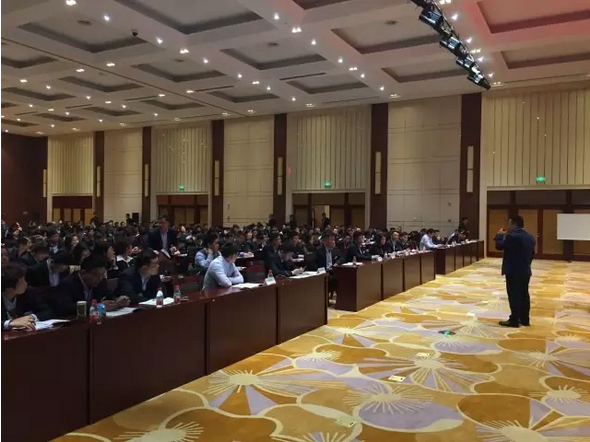
章其文进行现场培训
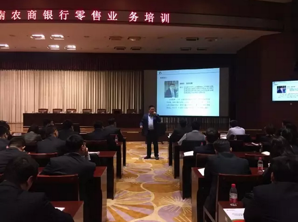
章其文进行现场培训
通过现场分析与讲解，结合各个部门的技术特色，行方纷纷表示效果显著，学有所得。
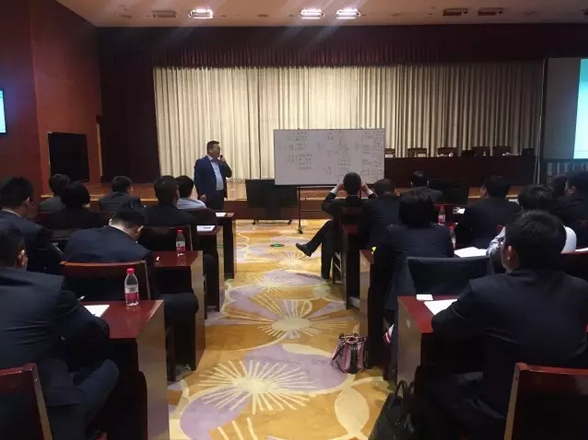
培训现场
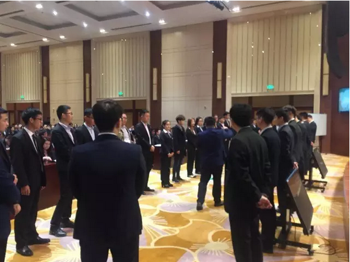
培训现场
经济日报称：银行转型应主动拥抱金融科技
发表日期：2017-04-13
主动拥抱金融科技是大势所趋，传统商业银行要实现转型突围发展，既要探索利用新技术不断创新服务方式和服务渠道，加速拓展新兴业务，实现服务渠道协同发展和资源整合，还要和金融科技公司构建合作共赢的良好关系，实现技术共享和平台共享，减少重复浪费，为再一次转型发展奠定基础。
近日，上市银行陆续发布2016年度经营业绩。在实体经济增速放缓的形势下，大部分银行保持了稳健增长的态势，经营业绩稳中有升。但在此背景下，银行各类业务发展对整体收入增长的贡献却呈现不同的趋势，其中息差收入逐渐下降，非利息收入贡献度稳步提高。
近年来，随着利率市场化的推进，银行业净息差收入持续下滑，且拉动银行业整体利润增长的动力更多来自于中间业务收入。经历了近几年的高速增长，部分银行的中间业务收入占比达三成以上，这与国际金融机构的一般水平相当。数据显示，截至2016年末，中行实现非利息收入1776亿元，同比增长21.91%，占比为36.72%，同比上升6.01个百分点。
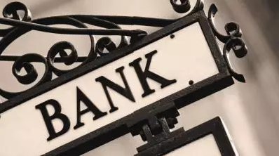
细化来看，各家银行中间业务的发展过程中也有一些细腻的变化，其中一部分传统中间业务日渐收缩。推动银行业中间业务收入进一步提升的，则是新兴中间业务的快速增长，其中资产托管、并购金融等业务发展势头迅猛。
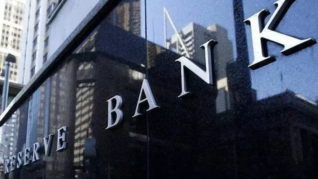
与此同时，金融科技公司的兴起对传统金融机构的影响越来越大。普华永道近日发布的年度《全球金融科技报告》显示，预计未来3年到5年，新兴金融科技公司将抢走大型金融机构24%的收入。由此看来，银行转型进入到了新的阶段，要保持利润增长必须改变经营思路。研究表明，2016年全球约50%的金融科技投资流向中国。银监会主席郭树清日前发表讲话指出，银行3.0时代已经来临，要利用金融科技，依托大数据、云计算、区块链、人工智能等新技术，创新服务方式和流程，整合传统服务资源，联动线上线下优势，提升整个银行业资源配置效率，以更先进、更灵活、更高效地响应客户需求和社会需求。
主动拥抱金融科技是大势所趋。传统商业银行要实现转型突围发展，既要探索利用新技术不断创新服务方式和服务渠道，加速拓展新兴业务，实现服务渠道协同发展和资源整合。同时，还要和金融科技公司构建合作共赢的良好关系，实现技术共享和平台共享，减少重复浪费，为再一次转型发展奠定基础。值得注意的是，在创新的同时，还应有效防范风险，努力发挥出互联网金融和金融科技应有的功能。
巾帼有壮志，行业女尖兵
发表日期：2017-04-13
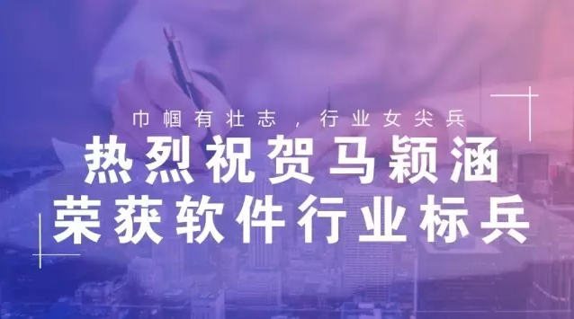
2017年4月12日，一年一度的“上海市软件行业行业标兵，服务明星”评选工作圆满落下帷幕。经过初审及专家评审环节，乾康（上海）金融信息服务股份有限公司软件开发部马颖涵脱颖而出，荣获了2016年度“上海市软件行业标兵”称号。获奖名单在同日的《文汇报》上公示。
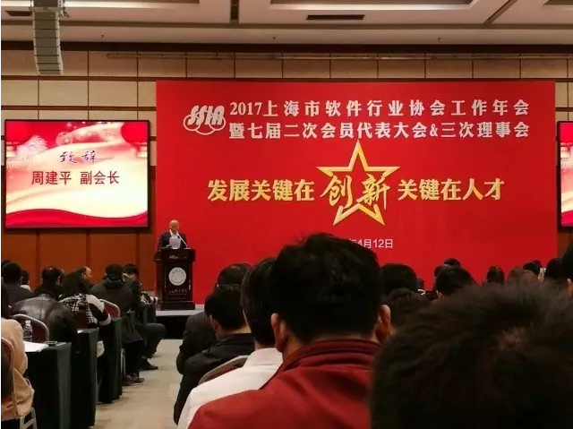
颁奖大会现场
从最初的会计注册师拥有者到如今乾康软件平台部的老大，她始终专注于自身业务技术的提升，作为一名战斗在一线的优秀工作者，她用专业的技术知识，规范的服务操守，良好的沟通协调，得到了公司同仁和行方客户的充分肯定和一致好评。
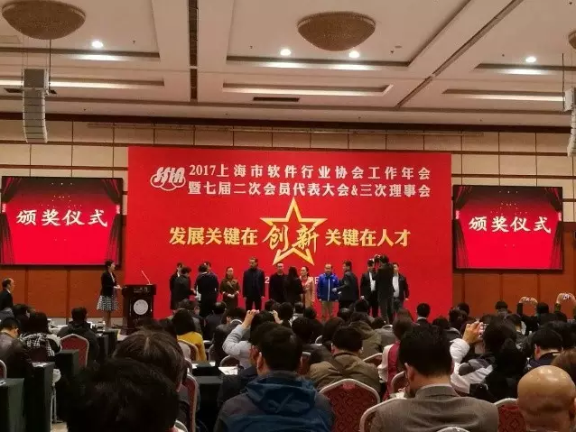
颁奖大会现场
作为乾康团队的核心成员，马颖涵明确客户需求，分析项目技术定位，以数据分析为导向，带领团队研发和上线运营了乾康快信平台、乾康快贷平台、乾康数据化运营平台，帮助银行解决了大数据采集、获客、授信评估、流程控制、信贷业务全生命周期风险控制等问题。
马颖涵获奖
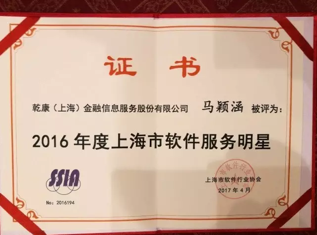
证书
乾康（上海）金融信息服务股份有限公司也十分注重于员工的培养。作为一家金融公司，专注于个人信贷业务的运营管理和风险把控，凭借雄厚的专业实力、丰富的项目经验和强大的科技支撑，形成了高效的个人信贷业务风控运营体系，拥有精准的数据挖掘能力和较强的场景建模实力。
乾康是农商银行联盟的战略合作伙伴，万事达组织亚太地区战略合作伙伴，某大型电商消费金融的战略合作伙伴。
乾康顺利完成区级项目申请答辩
发表日期：2017-03-06
2017年3月3日，乾康就《互联网金融产品风控及授信评估系统项目申请》通过层层审批，在徐汇区行政大楼进行项目评审答辩。公司项目负责人——马颖涵及刘学军、熊俊参加了评审会。
项目答辩现场
该项目在广泛整合国内权威十余家大数据公司和征信机构数据的基础上，通过覆盖信贷全生命周期管理的顶尖风控技术，为区域性商业银行、消费金融、电商金融、P2P、小贷金融等机构提供大数据驱动的信贷风控流程管理和决策服务，帮助金融机构挖掘垂直细分的客户市场，应用量化风控手段创新金融产品。
答辩前的核实确认讨论
乾康在为区域性商业银行等金融机构提供专业化咨询运营服务方面，拥有十分丰富的专业经验，为近50家银行客户提供过小微贷/信用卡业务咨询、风控体系建设、直销银行等服务，包括江苏省某农商行“融诚通”项目，福建省某农商银行“灵活金”项目，山西省某联社小微贷项目，累计通过风控评估授信100个亿，培养出90人的线下风控专家团队。
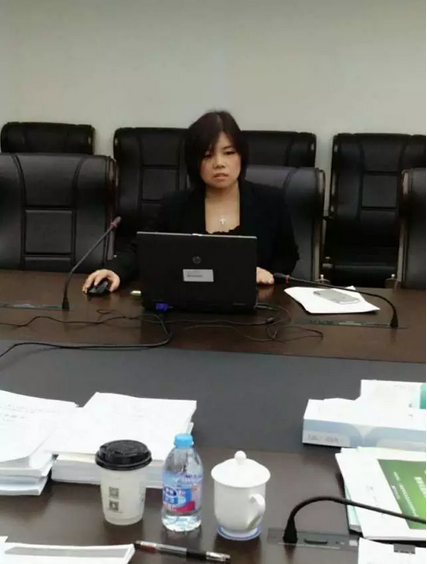
项目负责人就项目内容进行宣讲
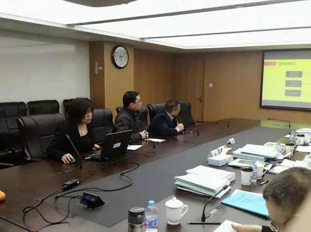
答辩人员就项目进行答辩
又一小微贷项目正式启动
发表日期：2017-03-06
2017年3月2日，湖南某农商银行小微贷项目正式启动。
项目启动会现场
在项目启动会上，银行领导王行长就小微贷的项目背景、项目要求、发展前景作了重要讲话，对各位小微贷新人提出了殷切期望。王行长表示：在小微贷缺口巨大的时代背景下，与乾康金融合作，定能实现合作共赢，互创未来的美好局面。
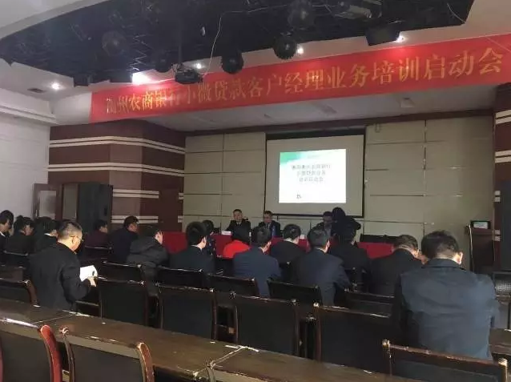
王行长发表讲话
随后，公司副总裁刘学军从行业趋势、职业规划以及如何做一名优秀的小微贷客户经理进行了分享，鼓励大家抓住当下机会好好学习，成为一名优秀的金融人员。
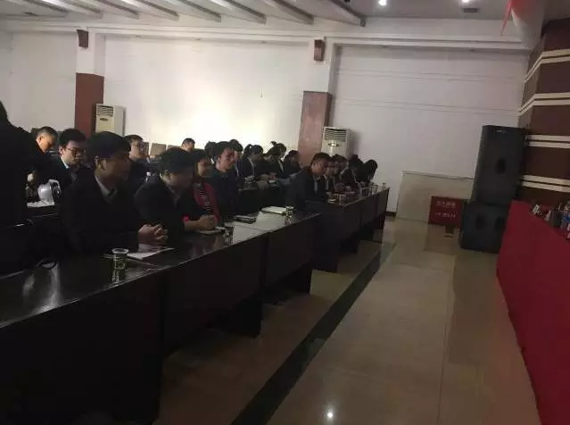
参与人员众多
乾康公司咨询运营部刘永安副总经理对与会人员进行了团队建设，并就课程安排、培训计划及内容、纪律要求等进行了宣贯。小微贷项目培训正式开始！
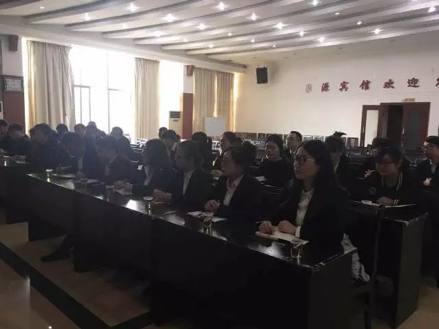
与会人员认真专注
撸起袖子一起干！乾康成功完成原创新动力项目路演
发表日期：2017-03-14
2017年3月8日，乾康成功完成漕河泾开发区原创新动力3月项目路演。该项目由漕河泾新兴技术开发区科技创业中心与上海市创业投资行业协会主办，参与者为部分优秀企业及投资人。
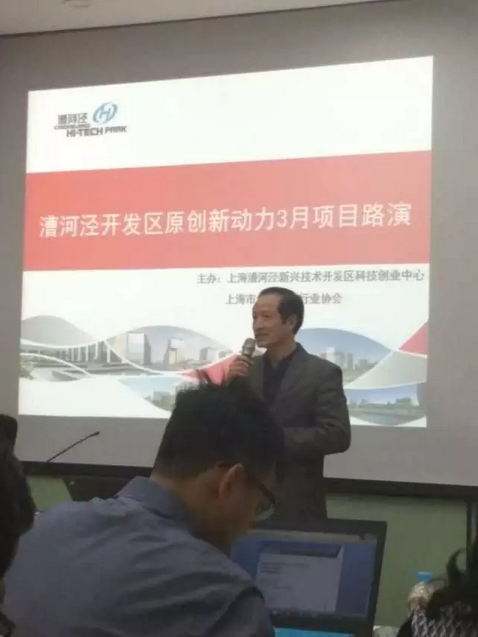
行业协会王主任发表讲话
周总简单介绍了乾康金融的现状：目前主要客户为30多家具有一定资产规模的农商、城商银行，其中3家为沪深主板上市公司；总资产超3000亿的未上市银行占1/3。
银行客户的总资产规模超过10万亿元。
与乾康合作累计授信额度超过100亿元。
周总介绍乾康业务
应对行业的困境与需求，乾康也有独到的解决方案：/信用卡业务咨询、风控体系建设、直销银行等服务，包括江苏省某农商行“融诚通”项目，福建省某农商银行“灵活金”项目，山西省某联社小微贷项目，累计通过风控评估授信100个亿，培养出90人的线下风控专家团队。
1、小微贷运营
- 完整的制度型微贷业务制度体系
- 高素质的业务团队
- 适合中国国情的升级IPC微贷技术
2、信用卡运营
- 创新的盈利性信用卡产品设计
- 完整的信用卡业务制度体系
- 融入IPC微贷理论的客户甄别技术
- 具有多个项目超过3年的运用经验
- 紧随互联网金融发展的信用卡业务增值服务
3、金融科技支撑
- 满足了农商行对金融科技的需求
- 乾康数据来源广，信用评估能力全
- 快信整合征信数据，提供获客、反欺诈、客户价值评估、客户信用评估
- 快贷整合个人信贷业务综合管理平台，全业务流程管理，支持多机构，多产品和场景集市
- 移动端应用，实现移动办公移动作业
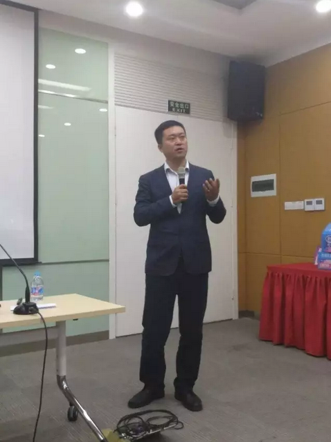
周总进行项目宣讲
乾康的业务涉猎和发展前景吸引了众多投资者关注，问答环节中，各投资者踊跃提问，现场气氛热烈。
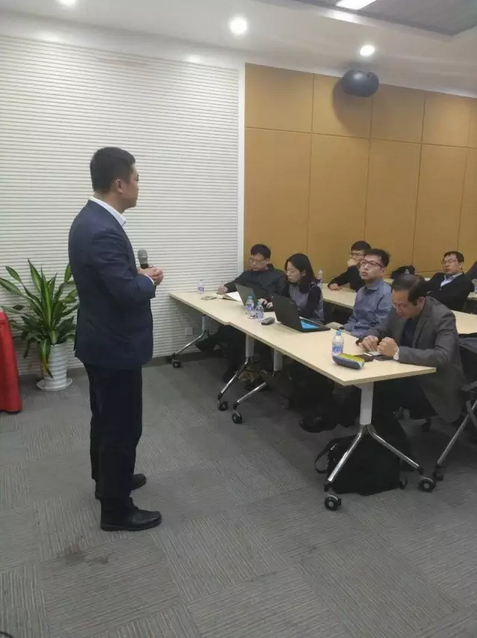
投资者向周总提问
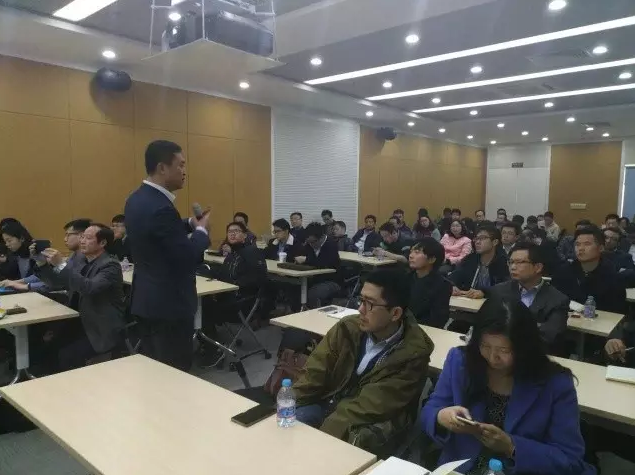
周总答投资者问
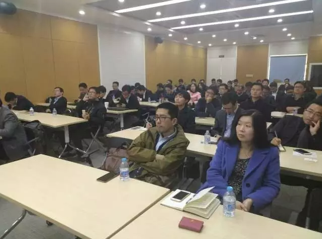
路演项目现场
大咖秀|浅谈直销银行业务
发表日期：2017-03-14
直销银行是传统银行拥抱互联网的一个缩影。在当前互联网与金融的结合趋势渐成之时，金融机构如何构建直销银行运营模式？将面对哪些挑战？我们就这些问题，邀请我司负责直销银行运营管理的高级副总裁刘文新对话直销银行发展。
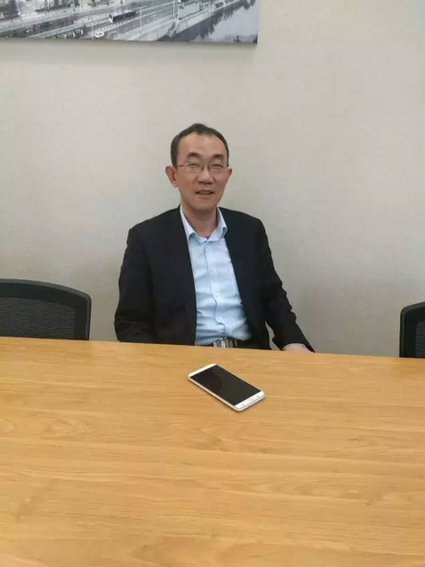
我司负责直销银行运营管理的高级副总裁刘文新
直销银行是互联网时代应运而生的一种新型银行运作模式，是互联网金融科技（FINTECH）环境下的一种新型金融产物。这一经营模式下，银行不依托营业网点，不发放实体银行卡，客户主要通过互联网渠道获取银行产品和服务，因没有网点经营费用和管理费用，直销银行可以为客户提供更有竞争力的存贷款价格及更低的手续费率。产品标准化、更便捷的操作流程、通过降低运营成本回馈客户是直销银行的核心价值。
自2014年以来，直销银行迅速发展，目前已达60多家。但是直销银行的发展普遍面临着两个难题，首先，直销银行同质化现象较为严重，真正具有不可复制性和独到性的直销银行少之又少。其次，直销银行与传统银行的手机银行、网上银行之间界定模糊，没有明显的区分，更没有突出其应有的互联网化创新特性。经过近几年的竞争，大多数直销银行基本都未成气候，无论是在产品设计和营销推广方面与优秀互金企业都存在不小的差距，仅仅依靠银行的信用背书与互金行业苦苦竞争，持续有效的获得新客户能力普遍不足。既然“外战外行”、“外战不力”，于是大多数直销银行纷纷转向了内战，好在内战总算是内行的，抢行内客户没有难度，通过行内客户的转化也算活了下来，但这与直销银行设立之初定位于通过互联网与互金行业竞争获得新客户的设想相去甚远。那么如何走出这样的困境从而使直销银行尽快探索出一条符合互联网特质的直销银行发展之路呢，刘文新就以下几个方面谈谈个人的看法：
1、引流获客
由于目前互联网行业内引流获客渠道良莠不齐，存在一大批“羊毛党”，甚至是通过技术手段模拟的虚假“客户”，普遍存在客户转化率极低和成本高企的问题，传统的互金行业引流渠道经过近几年直销银行的实践，大部分不符合直销银行互联网引流的选择标准。通过一些银行的探索，与大型电商平台合作不失为目前较为有效的引流方法，经过这些大型电商平台的大数据分析，能够较为准确的为银行提供与直销银行产品特质相符的客户。由于直销银行新客户认证手续较互金行业普遍繁琐，为增强客户体验，可以尝试由电商平台向银行提供目标客户的基础信息，银行通过系统预开户处理，然后向这类客户定向推送营销信息，将大大简化新客户注册投资的流程，从而提高客户的体验感和转化率，另外通过微信朋友圈广告的形式按照目标客群进行精准推送也是一种行之有效的获客方法。
2、内容营销
目前大部分直销银行的自媒体（微信公众号、微博、知乎和APP等）大都以软文的形式宣传自身产品为主，未能激发存量客户阅读和转发的热情，这主要是未能从客户的角度考虑其需求，自媒体的蓬勃发展主要是依据人刷存在感（分享和炫耀）的心理，一篇高质量的文章或符合人分享心理的图文往往会在朋友圈内迅速得到传播。直销银行的自媒体要想得到快速的认可，在其内容建设方面要作为重点工作予以更多的关注和投入，只有好的内容才值得现有粉丝进行传播，从而起到不掉粉和吸粉的作用，这方面直销银行应该借鉴那些微博大V和微信公众号大号的做法。
3、活动营销
客户成为直销银行的粉丝之后如何让这些客户成为有效的投资户就需要通过各种活动来激发其活跃度和关注度，通过持续不断的活动来增加其体验感是活动营销的重点，在活动营销的过程中，要多与场景营销相结合，可以与一些异业进行合作，多维度为客户提供特惠服务。利用口碑营销或者社交传播来提高品牌的知名度。
4、产品营销
直销银行的产品在设计时应有别于本行线下金融产品，在品牌和产品宣传方面要给客户不断植入便捷和相对高收益的理念。低成本”和“便捷化”是之前推动直销银行的两个重要方向，接下来的趋势，应该是“定制化”和“专业化”。用低成本方式为长尾客户或新兴客户提供个性化、定制化和高附加值服务，是今后直销银行的着力点，而这种服务只有靠人工智能和大数据来解决。这方面直销银行要加强与大数据分析公司和金融科技型公司的合作，进一步提升金融科技的内涵。
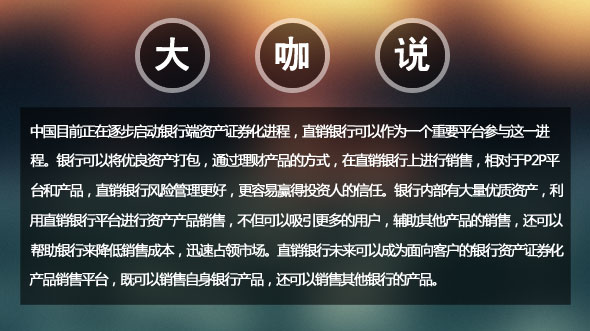
盘点金融圈压力排行榜，你中枪了吗？
发表日期：2017-03-17
金融人士何来那么多压力？
金融圈里有一个流传已久的噩梦“the magicroundabout（魔法环岛路）”：早上7点钟，的士司机会在银行楼下等你，带你回家，等你上楼洗个澡，再把你带回公司。这就是金融圈人士的生活写照。
卡斯商学院访问学者克里斯·罗巴克(ChrisRoebuck)曾表示，过劳的年轻人日益成为伦敦金融城的一个问题。“由于个人雄心或者就业市场的原因，人们非常渴望抓住工作机会，压力由此而来。
金融圈里的工作压力排行榜
美国媒体曾经做出调查，把华尔街的工种按照压力做了个划分排名。
1、投资银行家 InvestmentBanker：作为全华尔街压力最大的工作，投行在各项压力指标中都名列前三。投资银行家面临的主要压力来源于工作的难度和巨大的数量，尤其是经理和分析师。
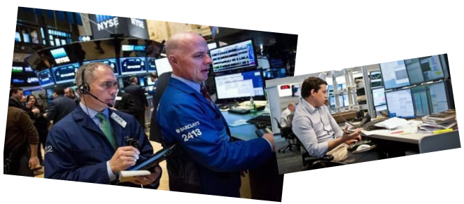
2、交易员Trader：大部分的交易员不用像投行家一样长时间加班，但他们可能有一个更严重，更直接的压力。他们的压力是实时瞬间爆发。
3、风险管理 Risk management & compliance:几年前，这个职位不会排的这么靠前。风险和合规人员收入不如交易员和投行家那样高，但他们的压力却一点都不小。风险和合规只排在第三的原因是工作有保障，目前，缺乏足够的专业人士来填补职位空缺。
4、财富经理/财务顾问Wealthmanager/financialadvisor：财富经理和财务顾问面临着一种特定的压力：被解雇是家常便饭。
5、机构销售 Institutionalsales：任何销售类的工作都有压力。外加上工作的不稳定以及工资涨幅的降低，机构销售就是一种折磨。
6、管理咨询 Managementconsulting：这份工作说到底就是加不完的班，做不完的项目和出不完的差。咨询师永远处于“开工”状态。
7、私募基金 Private equity：要在私募工作，你必须非常聪明，非常勤劳并且技能全面。
8、行业研究分析师 Industrial coverage/researchanalyst：有钱，激情，具有爆炸性的基金经理和交易员都依赖研究分析师开展工作。而分析师却往往成为被指责的对象。尤其是在买方。
9、基金经理 Fundmanager：基金经理也是一个高度紧张的工作，但是他们有资历，不必做繁重的工作，并且往往更有钱，这或许能让他们稍稍喘口气。
10、技术人员 Technology：技术人员的压力还不算大，偶尔有上司的抱怨让你少花钱多干事。不过没有赚钱的压力那么大。
金融精英靠什么解压？
1、放慢一下工作速度。如果你被紧张的工作压得喘不过气来，最好立即把工作放一下，放慢一下，轻松休息一下，可能你做得更好。
2、合理地安排作息时间严格执行自己制定的作息制度，使生活、学习、工作都能规律地进行。
3、注意培养良好的心态加强心理疏导，养成自己作心理分析的习惯。可以考虑与心理医生交朋友，以期经常得到他们的帮助。
4、保证充足的睡眠不要违反自然规律，让身体的各种机能好好休息。
5、正确地评价自己永远保持一颗平常心，不要与自己过不去，把目标定得高不可攀，凡事需量力而行，随时调整目标未必是弱者的行为。
湖南某农商行小微贷中心辩论大赛冠军队新鲜出炉！！
发表日期：2017-03-27
2017年3月24日，由乾康金融与湖南某农商行共同组织的小微贷中心辩论总决赛圆满落幕!
此次活动着重培养客户经理的逻辑思考能力，语言表达能力，组织能力与团队协作能力，取得了新的突破。
比赛采取初赛晋级决赛制。初赛人员由全体微贷客户经理组成，共分8小组，两两小组对决，共四辩论，辩论采取自由辩论原则，经过激烈辩论，共产生8位最佳辩手，这8位辩手将组成2小组进入最终总决赛。
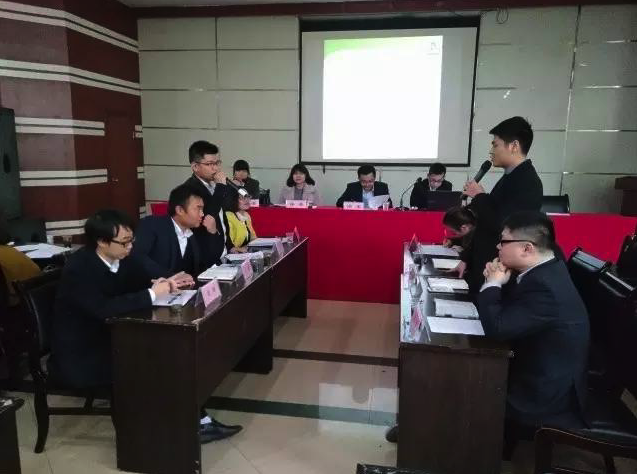
总决赛辩论现场
决赛先由主席致辞，介绍辩题相关背景资料;选手结合自己的辩题进行自我介绍，简单介绍比赛流程和规则后，辩论正式开始。
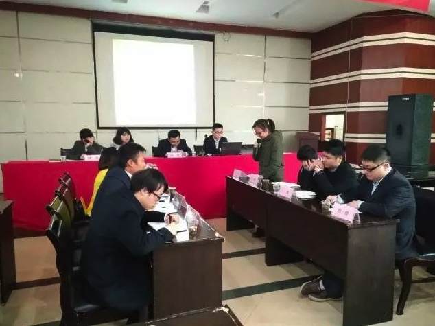
正方一辩发言

反方二辩攻辩
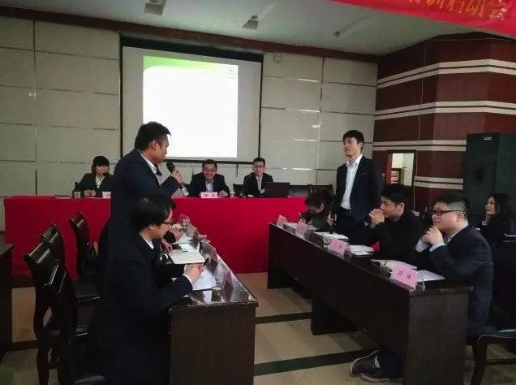
双方自由辩论
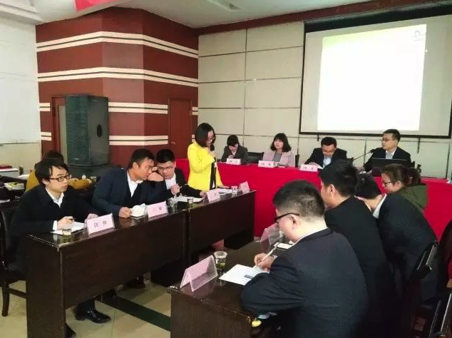
总结陈词
赛后更增加了现场观众互动环节，观众可向正反方各提问题，由双方选派选手作答。该环节在正式比赛结束后进行，增加比赛观赏性，不影响比赛结果。
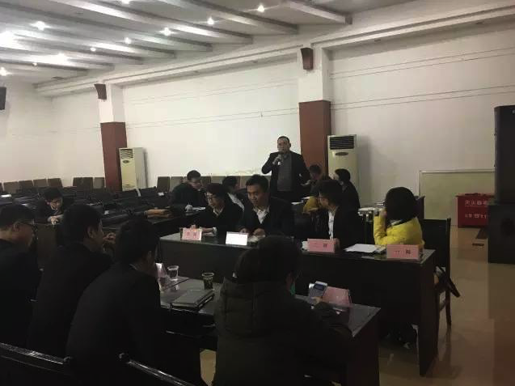
现场观众提问
- 总 决 赛 -
获奖团队
让战略落地 乾康在行动
（乾康培训班开课了！企业转型刻不容缓）
发表日期：2017-04-06
2017年3月31日下午1点，为期两天的乾康（上海）金融信息服务股份有限公司（简称乾康金融）管理层培训班于乾康金融上海总部正式开课，来自综合部、软件开发部、乾康金服部、咨询实施部等部门包括乾康金融总裁周滨在内的逾20名学员参加此番培训。
定期举办集团管理层培训是乾康一直以来保留下来的传统美德，旨在通过培训，阶段性的梳理整个企业的“行动目标”，并就企业目前存在的突出问题进行深入探讨，制定可行性的解决方案，将业务落地，提高签约数量。
金融科技 乾康让金融更简单
为提高本次培训的“含金量”，综合部的老大们还特别邀请了著名“企业资深医生”潘老师，就“如何跨越战略与实施间的鸿沟”这一主题进行深入探讨。
“触目惊心的现状”、“企业转型的辨析”、“战略如何落地”、“企业形象的剖析”、“运用数字化管理工具落实战略转型”……潘老师通过五大模块从企业转型的必然性入手，对企业形象进行深入剖出，并言简意赅地提出可行性方案。
培训会上，潘老师毫不留情的直指乾康金融目前存在的问题，她表示，不同的沟通风格造成团队成员在同一件事情上的理解存在差异，产生沟通成本，团队沟通一致性低，公司整体运营能力有待加强。“核心管理层需要做角色的转换，以提高整体的管理支撑性。”她强调道。
至于公司的核心价值，咨询实施部的张小娜亦总结道：“懂金融、懂科技、产品化、平台化，正如我们新的slogan所总结到的‘乾康，让金融更简单’。”赢得现场掌声一片。
聚焦目标 公司全员实施OKR
长达4小时30分钟的潘丽达老师精彩培训之后，乾康金融总裁周滨就三大部门的核心职能再次梳理强调道：“软件开发部应该起到的是生产发动机的功能，但提供的产品并不是最终的组合产品，只是重要配件；咨询实施部则重点在于加工组合，通过为B端用户提供产品，服务好C端用户；而乾康金服部门的职责不但但只靠人力，关键是制造资产的能力，为互联网银行客户提供乾康研发的理财产品。”
另外，为帮助公司更好的聚焦战略目标，更好的集中配置资源，更好的使团队上下同欲，乾康金融将从2017年二季度起正式全员推行OKR（即目标和关键成果法），届时，将以季度为周期，事先确定当季度的目标及关键结果，以每两周检查一次的频率，进行OKR的Review。
让战略实实在在落地，乾康在行动，你准备好了吗？
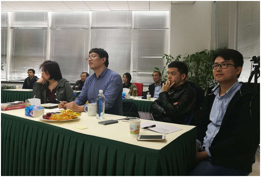
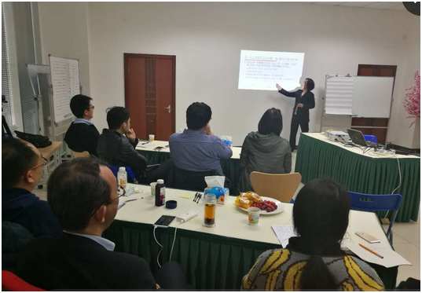
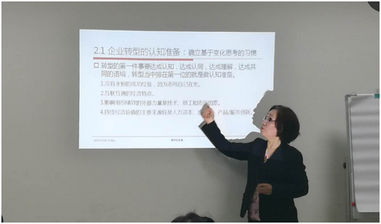
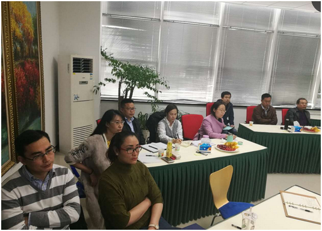
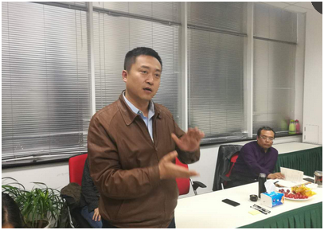
乾康，让金融更简单！
发表日期：2017-04-14
为何提出这个口号呢？在当前社会，普通大众对于金融感到颇为复杂，其金融流程更难以掌握，这就需要进行创新，就是提高效率，这其实是一回事。你让打车更简单，你就是滴滴。你让购物更简单，你就是淘宝。这就需要一个好的slogan来进行品牌宣传。那什么才是一个好的slogan？有很多耳熟能详的Slogan被口口相传，但若问及这是哪个品牌的Slogan，很多消费者往往答不上来，更不用谈，透过Slogan传播企业的品牌内涵。“钻石恒久远，一颗永留传”被奉为广告界的经典，可是，有多少网友知道这是哪个品牌的Slogan呢？金融品牌中，让品牌词包含于Slogan之中的正面案例如：“平安保险：买保险，就买平安”、“点融网：手机理财，上点融”，这将更有利品牌的传播。基于以上的分析，我提出了“乾康，让金融更简单！”该slogan，一方面体现了乾康的品牌，另一方面，体现了乾康的服务宗旨。
大道至简。简，意为浓缩八方先进理念于一身；既含事物运作极速高效之宗；亦包诚信厚德服务至上之意。简，即乾康奉行的核心理念。
剔其繁杂于乾康，给其简约于客户。一直以来，我们奉行着：“乾康，让金融更简单！”的核心理念真诚的服务于区域性商业银行等金融机构，为其提供信贷风控咨询运营。打造OTO商业模式服务平台。
乾康不简单，只让金融更简单！乾康，作为一家fintech公司，聚集了大批银行风控数据专家，又借助互联网数据，在大数据平台基础上，结合高科技技术，为银行严格把控风险。公司高层智囊云集，现有公司员工145人，其中受高等教育人员占98%以上，博士6人。公司成立3年间已获得17个软件著作权，为近50家银行客户提供过小微贷，信用卡咨询及风控体系建设服务。累计通过风控评估授信100个亿，培养出90余人的线下风控专家团队。
先进理念，是乾康服务客户的核心。君欲成事必先谋于心。一个先进的理念是企业文化的内核，只有保持理念的先进性才能保证一个企业的战略方向的正确性。公司拥有先进的四维风控模型，立足当下，放眼全局针对21世纪中国金融风险特点提出一套独具特色的风险管控解决方案，这些先进的理念保证了公司客户的服务质量。
简约高效，是乾康服务客户的追求。时间即为金钱，时间即为价值。在现在快速发展的社会中，客户的时间显得相当的宝贵，我们需要做的就是通过专业的技术，使客户可以高效的进行工作，为客户节约时间。公司本着以客户为中心的原则，一切服务的落脚点都是为客户提供最高效的最简单的解决方案。公司的核心战略指导团队和技术研发团队针对不同客户的问题给出精准专业的解决方案，将繁杂冗余留给了乾康自己，将便捷高效的解决方案留个客户。
安全可靠，是乾康服务客户的根本。回想2008年的世纪金融海啸，无不让人不寒而栗。在金融领域，风险防控是绝对是最后一道屏障。失去这一道安全的保障，整个金融活动犹如不带安全绳行走在百米高空的杂技。而乾康正是看中了金融中这最关键的一环，所以才将安全性作为乾康的立身之本。让顾客不只是可以赢得利益而且将承受的风险降到最低。乾康在手，风险无忧。
简约是舍弃，更是收获；真正的简约不仅让我们返璞归真，更让我们感悟包容；你的心是造就了简约，还是包容了世界？世界无界，心容则容。相信公司将以突出的业务能力、先进的服务理念和简约的服务宗旨站在21世纪新起点为客户提供更加高效便捷，满意周到，至诚至信的服务。乾康，让金融更简单！

 中文
中文 ENGLISH
ENGLISH
沪ICP备13043724号